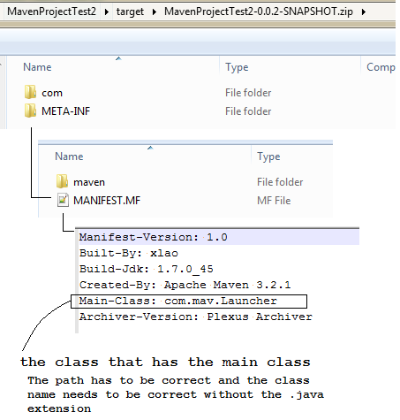
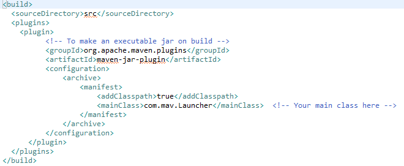
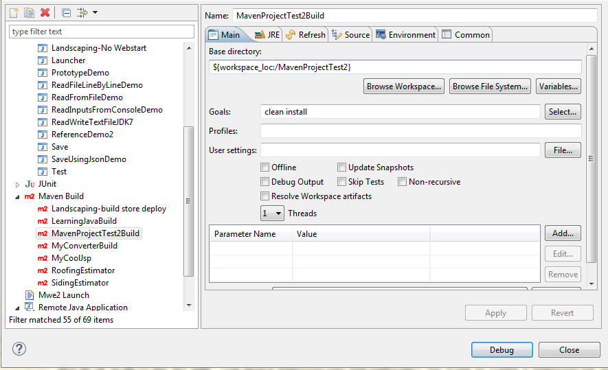

Java
A high level language we use for majority of our apps. Know that java classes are all written and saved with a .java extension. Then at compile time or build phase, the .java turns into .class files which is how the program is readable by the Java Runtime Environment (JRE). But to have links to run the app, you need to create either a .jar, .exe, .bat to run the app.
How we run our apps
To code, debug, and run the Java apps, we use a popular and free IDE call Eclipse. But any text editor can be used to write java classes like Notepad++ or text edit. Just that an IDE provides code hinting and tools to speed up development.
To build, package and deploy our Java app we use the plugin Maven
Different ways to build an executable java program
FYI
For any java app to runs it needs a main access class. Therefore, when compiling a java app, in order to run the app, a Manifest file has to be provided. Here is an example from a maven build. (note every plugin (like maven) uses a different technique to put this manifest file somewhere during compile time. 
The old school way
The old school way of using the command line will auto create a manifest file defining the main class when you run the command. So you don't have to manually create a manifest file.
- HelloWorld.java coded in notepad or textEditor
- using command prompt javac
- If you just want to compile and run a basic java class created from notepad without an IDE
- command prompt > javac HelloWorld.java > this will create a HelloWorld.class file in the same directory
- to run the class file > java -cp . HelloWorld
The advance way
- Create a executable jar file in eclipse using Maven to build
- you have to configure your pom
- 
- Then your project build configuration is set like this with clean install
- 
- When you build/debug you will get a jar file under your target folder
- The catch is that when maven builds/debug it creates a jar file of that program into the .m2 folder
- The program is now available the .m2 folder for other programs to call them as dependencies
- You will also get a snapShot.jar in your target folder
Difference between C++ Apps and Java Apps
- An example of a working Java Workspace you can mirror

Language Differences between Java and C++
- Java is a high level language vs C++ is a middle level programming language
- You have to manage your own garbage collection C++ but in Java it has it's own Garbage Collection
- C++ Uses pointers and Java doesn't
- Define methods and variables in header files (fileName.h) where as in Java you define all variables and methods in one .java file.
- In C++ you implement the methods in .cpp files vs Java you still only implement the methods and variable in one .java file
Installing or updating java
Due to the admin lock up, we no longer have privilege to install anything on our machine. You will have to contact desktop support to install java version you need for you. When java is installed, for 32-bit, java will appear in your programs files(x86) folder. For 64-bit, it'll appear under just program files.
Eclipse is an IDE that runs on a java VM. It only requires a jre. However, if you plan on developing Java applications, you probably want a JDK (Oracle supplies both. The licensing is different and they have different tool sets) A JRE just runs java applications. The JDK includes library source and a number of other tools you likely will need to develop Java applications. Having the source from the JDK available to Eclipse when you are developing a Java application makes the process much easier.